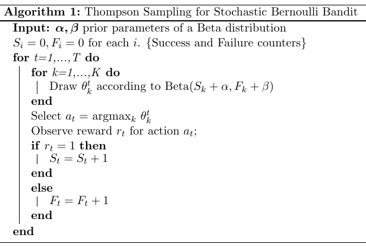

Stochastic Multi-Armed Bandit
For the stochastic multi-armed bandit (sMAB), we implemented a Bernoulli multi-armed bandit based on Thompson sampling algorithm (Agrawal and Goyal, 2012).

The following notebook contains an example of usage of the class Smab, which implements the algorithm above.
First, we need to define the list of possible actions \(a_i \in A\) and the priors parameters for each Beta distibution \(\alpha, \beta\). By setting them all to 1, all actions have the same probability to be selected by the bandit at the beginning before the first update.
[1]:
# define actions
action_ids = ["Action A", "Action B", "Action C"]
[2]:
import numpy as np
from pybandits.model import Beta
from pybandits.smab import SmabBernoulli
/home/runner/.cache/pypoetry/virtualenvs/pybandits-vYJB-miV-py3.10/lib/python3.10/site-packages/tqdm/auto.py:21: TqdmWarning: IProgress not found. Please update jupyter and ipywidgets. See https://ipywidgets.readthedocs.io/en/stable/user_install.html
from .autonotebook import tqdm as notebook_tqdm
[3]:
n_samples = 1000
First, we need to define the mapping of possible actions \(a_i \in A\) to their associated model.
[4]:
# define action model
actions = {
"a1": Beta(),
"a2": Beta(),
}
We can now init the bandit given the mapping of actions \(a_i\) to their model.
[5]:
# init stochastic Multi-Armed Bandit model
smab = SmabBernoulli(actions=actions)
The predict function below returns the action selected by the bandit at time \(t\): \(a_t = argmax_k \theta_k^t\), where \(\theta_k^t\) is the sample from the Beta distribution \(k\) at time \(t\). The bandit selects one action at time when n_samples=1, or it selects batches of samples when n_samples>1.
[6]:
# predict actions
pred_actions, _ = smab.predict(n_samples=n_samples)
print("Recommended action: {}".format(pred_actions[:10]))
Recommended action: ['a1', 'a2', 'a2', 'a2', 'a1', 'a2', 'a2', 'a1', 'a2', 'a1']
Now, we observe the rewards from the environment. In this example rewards are randomly simulated.
[7]:
# simulate reward from environment
simulated_rewards = np.random.randint(2, size=n_samples)
print("Simulated rewards: {}".format(simulated_rewards[:10]))
Simulated rewards: [0 1 0 0 0 1 0 0 0 1]
Finally, we update the model providing per each action sample: (i) the action \(a_t\) selected by the bandit, (ii) the corresponding reward \(r_t\).
[8]:
smab.update(actions=pred_actions, rewards=simulated_rewards)
[ ]: